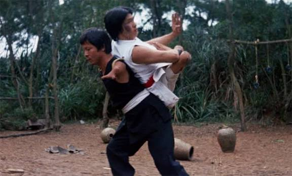

THE CRIPPLED MASTERS (1979) — CERTIFIED MGC G-2

🏛 MGC LOWER COURT OF APPEALS
- ASSET TITLE: The Crippled Masters (1979) – The Fractured Grindhouse Alloy
- OFFICIAL REGISTRY GRADE: Certified MGC G-2 (Good-2 / Extreme Structural Fracture)
- LOWER COURT JURISDICTION: Judge Tina, Chief of Cult Classics
- CASE FILE: #041
📜 THE FORENSIC NARRATIVE BREAKDOWN & RECOVERY
Tina steps up to the steel bench under the neon light to examine this cult relic.
1. Severe Production Corrosion & Heavy Planchet Fractures
- Examining this late-70s grindhouse entry reveals heavy technical flaws, including corroded print quality, uncalibrated lighting, and rough audio tracking. Story-wise, it relies on a sparse revenge plot that plateaus during the middle-act training segments.
2. Phenomenal Martial Arts Luster & Unbreakable Baseline Spirit
- Despite its structural wear, the film is saved from the lowest grading tiers by the extraordinary physical execution of its two leads. Their synchronized “human tank” fighting style and raw athletic performance completely elevate the viewing experience for exploitation fans.
⚖️ THE CHIEF’S FINAL DECREE
- Judge Tina wraps up the evaluation of Case File #041, stamping The Crippled Masters with a Certified MGC G-2 grade due to its heavy grindhouse grit and unyielding cult spirit. 🔨💥🧱

• © 2026 MOVIE GRADING CONSENSUS. All Sovereign Rights Reserved.